| Подробнее о нашей деятельности и о новом зале. |
| СРОСО «Федерация Айкидо Айкикай Саратовской области» - так официально звучит наше название. А это официальные бумаги о регистрации. В общем, нас посчитали. |
| 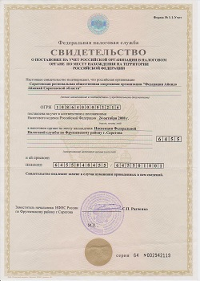 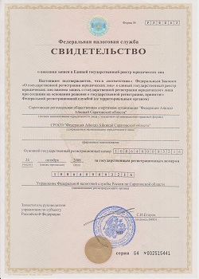 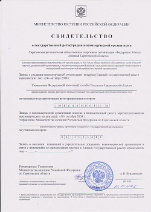 |
|
Сейчас работа федерации проводится по нескольким направлениям. Первое - это пропаганда и развитие айкидо в Саратове. Тут все ясно... Пропагандируем и развиваемся. Открываются новые группы, новые залы. Делаем показательные выступления. А в этом сезоне наконец-то и детские группы открыли. Народу заниматься стало существенно больше. Проводим сами и ездим на обучающие семинары. Второе - обеспечение качественного тренировочного процесса в соответствии с требованиями и нормами хомбу додзе. Фактически в рамках федерации сложилась школа айкидо. С едиными методическими методами тренировок и едиными экзаменационными требованиями. С четкой вертикалью ответственности. Наверху тот, кто отвечает за все. Руководитель. Дальше инструктора. Они главные в группах. Они и их старшие ученики на мастер классах и общих тренировках вырабатывают единый стандарт в технике при подготовке к экзаменам. Инструктор принимает решение о рекомендации ученика на экзамен. Если ученик не сдает экзамен, то теряет лицо инструктор, его рекомендовавший, а вместе с ним и вся школа… В связи с этим возникает небольшая проблема. Проблема у тех, кто занимается у других инструкторов. Обзор групп этих инструкторов можно посмотреть в соответствующем разделе сайта. Заключается она в очень слабых экзаменах. И как результат, иногда эти экзамены проваливаются. Моя позиция по этому вопросу однозначна - если экзамен не сдан, виноват только инструктор. Я не считаю этих инструкторов плохими. Просто то, что происходит на их занятиях, не является подготовкой к экзаменам. Занимаясь в этих группах нужно четко отдавать себе отчет - вы движетесь ровно туда, куда ведет вас ваш сенсей. И не плохо, если он сам хоть чуть-чуть представляет куда именно, и хоть чуть-чуть заинтересован в вашем росте. С другой стороны, если вам нравиться то что вы делаете на тренировках – очень хорошо! Выбор за вами… только делая выбор, принимайте и его последствия. Третье. Скажу красиво - обеспечение законности экзамена. Очень многих эта сторона вопроса вообще не волнует… каждому свое... На территории России хомбу додзе аккредитовало только одну организацию на проведение официальных экзаменов - Федерацию айкидо айкикай России. В рамках этой организации работает приемная комиссия. Крайне малочисленная. Всего 8 человек. Принимают экзамены до 2 дана. Любопытные могут найти имена сами. Если экзамен принимается кем-то еще... ну мы же в России… и диплом о высшем образовании можно купить в переходе. Хотя, иногда этот диплом не хуже настоящего. Наш куратор, Михаил Сафронов, входит в эту приемную комиссию. Далее - чтобы экзамен был официальным, человек должен быть членом ФААР. Каждый сдающий экзамен у нас является членом ФААР через молодежную федерацию айкидо России. И последнее. Все, кто сдает экзамен, должны быть членами нашей федерации. Ведь экзамен вы сдаете у нас. И как раз мы и организовываем весь процесс. Вот собственно и вся работа организации. Наше серьезное достижение - это наконец-то свой зал. С 96 года было несколько проектов специализированных залов для айкидо. Все они на разных этапах развалились. Но последнее повышение арендной платы за залы для занятий стало почти катастрофическим. Причем, похоже не последним. Для бюджетников неприятно, но не убийственно… но мы-то не бюджетники… В общем, благодаря поддержке ООО «Деловой центр», «Стройград», «RОSSETTI», а также помощи старших учеников, удалось запустить специализированный зал. Пожалуй аналогов в Саратове нет. Зал на 80 метров. Оборудован со знанием дела и для себя. Комфортные раздевалки, душ и прочие удобства. Казалось бы …. Но…. Достаточно вспомнить «зал ветеранов» или «манеж» с их шикарными гигиеническими условиями. А татами в «гладиаторе» или «нон –стоп»…. Конечно лучше чем ничего. Корректно назовем их жесткими. Немного фото чтобы оценить процесс постройки зала в динамике. Это план-схема. После первоначального осмотра помещения. Оно не эксплуатировалось несколько лет. |
| 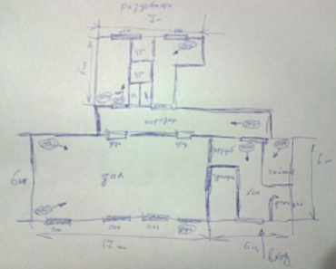 |
| Потребовалась перестройка и серьезный ремонт. |
| 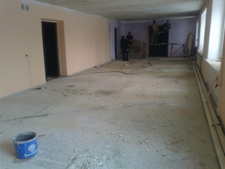 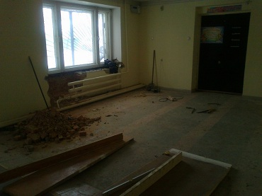 |
| 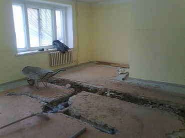 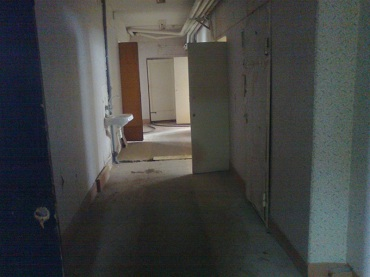 |
| Через какое-то время зал приобрел узнаваемые черты. |
| 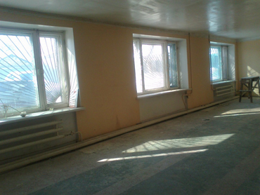 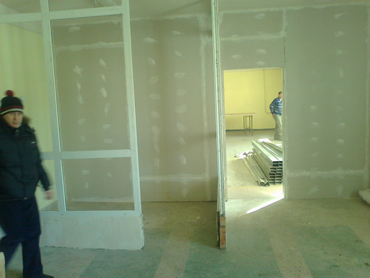 |
| Поиск, приобретение и комплектование татами - крайне увлекательный процесс. |
| 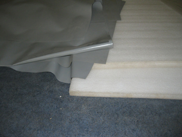 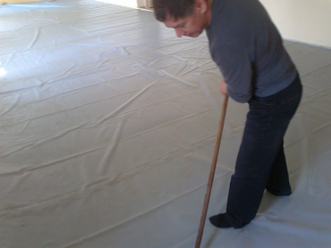 |
| Ну и то, что в итоге получилось. |
| 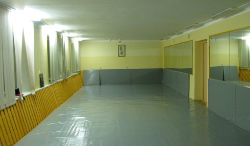 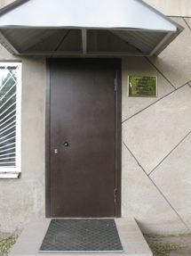 |
| 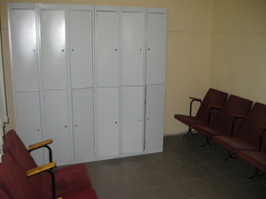 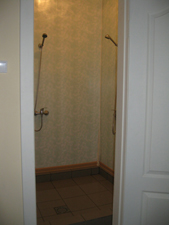 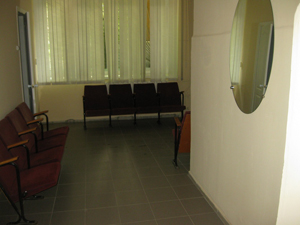 |
| Сейчас, в июльскую жару, тренировки проходят 2 раза в неделю. По вторникам и четвергам. Утренние в 9.30 и вечерние в 20.00 для взрослых. А с 18.00 - тренировка детской группы. |
| 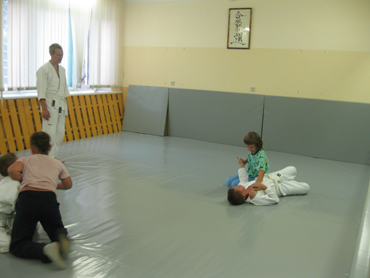 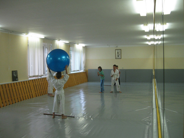 |
| В планах на осень загрузить зал полнее. Т.е. еще несколько групп для детей и взрослых. Планируется большой набор новичков. А так как все время наше, то и расписание будем менять по мере формирования групп. Приходите, звоните, смотрите. И начинайте заниматься!!! |